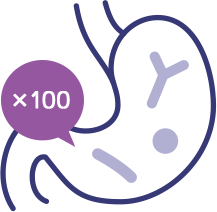
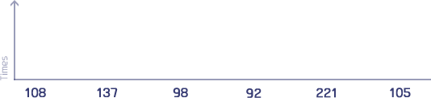

Maximize stability
during distribution.
Maximize the stability of lactic acid
bacteria vulnerable to temperature,
moisture and pressure.
Maximize survival rate
in the intestine.

Reach the intestine alive safely against
gastric acid and bile salt.
Maximize survival rate
in the intestine.

*Resource: Archives of Pharmacal Research, July 2015, Volume 38, Issue1, pp 1345-1350
Through real-time PCR technology, the fecal analysis
results indicates that DUOLAC Dual coated probiotics
which are endured from gastric acid and bile salts
have 100 times higher survival rate than
uncoated probiotics in the intestine